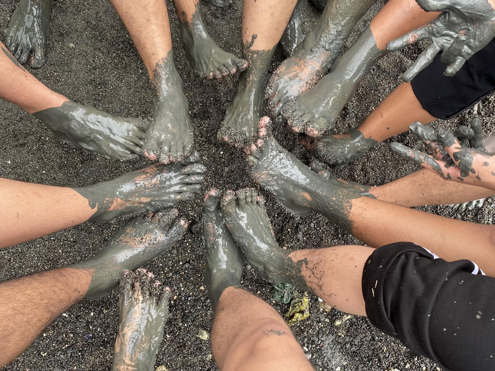

Explore our latest articles and posts.
Blog Post 1: Mangrove Tree Planting

Planting mangrove trees with my friends was an enriching experience. As we worked together, digging into the earth and carefully placing each sapling, a sense of camaraderie filled the air. The salty breeze mingled with our laughter, creating memories that would root deep within us. Witnessing our collective effort take shape, we felt a profound connection to nature and a shared commitment to environmental stewardship. In those moments, amidst the mud and mangroves, we found not just friendship, but a shared purpose in nurturing our planet's precious ecosystems.
Date: April 29, 2024
Category: Ala wa balo
Read More
Blog Post 2: Grade 12 Graduation Pictorial
As I stood before the camera for my graduation pictorial, it felt like a personal milestone, a moment frozen in time just for me. With only my face in focus, I couldn't help but think about the rollercoaster of emotions that had brought me to this point the late-night study sessions, the laughter with friends, the occasional self doubt. But in that serene studio, all I felt was a quiet sense of pride, like I was finally seeing the fruits of my labor. As the photographer clicked away, capturing the raw essence of my journey, I knew this photo would be more than just a memory it would be a testament to my resilience and the countless unseen moments that had led me here.
Date: May, 2023
Category: Ambot lang unsa
Read More